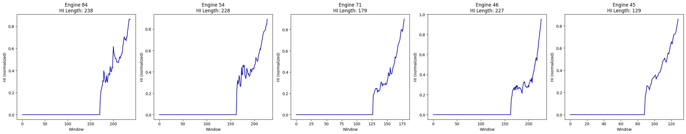
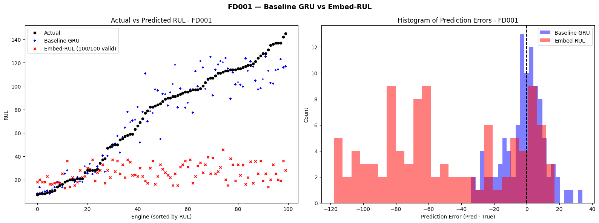
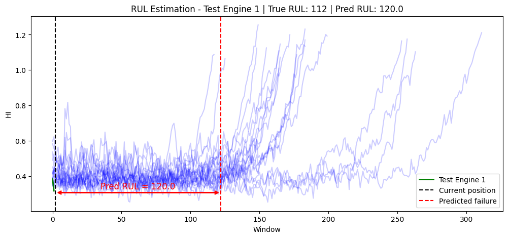

AI can tell you when you should expect to buy a new machine.
Predicting how much useful life a jet engine has left, using NASA's C-MAPSS turbofan data.
Unplanned failures are expensive, so you want to know how much life is left before it runs out.
NASA's C-MAPSS dataset simulates turbofan engines running from brand new until they fail, with 21 sensor readings every flight cycle. The goal is to look at a window of recent readings and predict how many cycles the engine has left (its remaining useful life, or RUL). I compared two deep learning approaches: a GRU, and Embed-RUL, which learns a "health" signal for each engine and compares it against engines it has already seen fail.
Both were trained only on FD001 (one operating condition, one fault type), then tested on all four subsets. The GRU's loss punishes late predictions more than early ones, since saying an engine has more life left than it actually does is the dangerous mistake.
Embed-RUL learns a health signal that clearly separates healthy engines from worn ones.
Its encoder turns each window of sensor data into an embedding. Healthy and degraded windows end up in completely different places, and the health indicator stays flat for most of an engine's life before climbing near the end.


On the data it was trained on, the simple GRU still predicted remaining life far better.
To predict RUL, Embed-RUL matches a test engine's health curve against the training engines. On FD001 the GRU got within 13.17 cycles RMSE, while Embed-RUL's predictions mostly came out too low.


Both models struggled once the operating conditions changed.
| Test set | Conditions | GRU RMSE | Embed-RUL RMSE |
|---|---|---|---|
| FD001 | 1 condition, 1 fault | 13.17 | 64.02 |
| FD002 | 6 conditions, 1 fault | 118.54 | no valid predictions |
| FD003 | 1 condition, 2 faults | 42.06 | 70.25 (65 of 100 engines) |
| FD004 | 6 conditions, 2 faults | 124.53 | no valid predictions |
Embed-RUL can only predict if some training engine lived longer than the test engine. The FD002 and FD004 engines run much longer than anything in FD001, so it found no matches at all. The GRU still gave a prediction for every engine, but it was way off on the new conditions. Where both models made predictions, the GRU's errors were significantly lower (paired t-test, p < 10⁻⁶).
My takeaway: a model trained on one operating condition doesn't carry over to others on its own. Next steps would be domain adaptation, or combining the GRU's coverage with Embed-RUL's easy to read health signal.
View the full report (PDF) →References
- Saxena, A., Goebel, K., Simon, D., & Eklund, N. (2008). Damage propagation modeling for aircraft engine run-to-failure simulation. International Conference on Prognostics and Health Management. IEEE.
- Gugulothu, N., TV, V., Malhotra, P., Vig, L., Agarwal, P., & Shroff, G. (2017). Predicting remaining useful life using time series embeddings based on recurrent neural networks. 2nd ML for PHM Workshop at KDD.